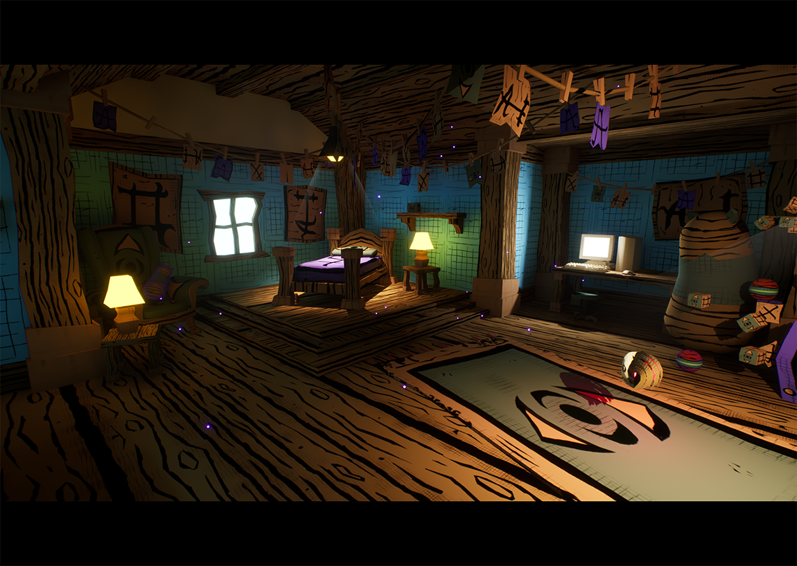

Lucid Lens — State-Driven Gameplay & UI
A collaborative Unreal Engine project exploring perception, interaction, and state-driven gameplay through mask-based mechanics. My work focused on Blueprint state management, UI systems, and ensuring clear, consistent UX across gameplay modes.

Play Lucid Lens
Lucid Lens was developed as a collaborative game jam project and is available to play on itch.io. This build demonstrates the state-driven gameplay systems, mask mechanics, and UI flows described in this case study.
What I Learned
-
Centralized state ownership prevents bugs
A single authority for state changes eliminates desynchronization. -
UI should react, not decide
Separating presentation from gameplay logic keeps systems scalable. -
Blueprints benefit from architectural thinking
Clear data flow and intent-based design outperform ad-hoc visual scripting.